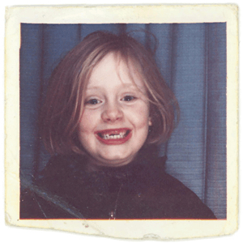

Synopsis
Adele was born in North London, England, on May 5, 1988, eventually attending the performing arts BRIT School. Her first two albums, 19 and 21, earned her critical praise and a level of commercial success unsurpassed among her peers, with the artist selling millions of albums worldwide and winning multiple Grammys. She also received a songwriting Oscar for the James Bond track "Skyfall." After becoming a mom, Adele returned to the charts in autumn 2015 with the ballad "Hello," the lead single from what was dubbed her comeback album 25. In 2017, she won five Grammys for her work on 25 including album, record and song of the year for "Hello."
Commercial Success
Adele's debut album, 19, which is named for the singer's age when she began recording the project, went on sale in early 2008. Led by two popular lead singles, "Hometown Glory" and "Chasing Pavements," the record rocketed Adele to fame.
Released in the United States through Columbia Records, 19 resonated with American audiences, much as it had with British music fans. Adele cemented her commercial success with an appearance in October 2008 on Saturday Night Live. At the taping of the show, the album was ranked No. 40 on iTunes. Less than 24 hours later, it was No. 1.
At the 2009 Grammy awards, Adele took home Best New Artist. In addition, the album earned the singer the distinction of being named the "Sound of 2008" by the BBC. That same year, she earned the Critics' Choice prize at the BRIT Awards.
Blockbuster Followup: '21'
Her much anticipated follow-up album, 21, again named for her age at time of recording, did not disappoint upon its release in early 2011. Tapping even deeper into Adele's appreciation for classic American R&B and jazz, the record was a monster hit, selling 352,000 copies within its first week.
Anchored by hits like "Rolling in the Deep" and "Someone Like You," 21 placed Adele in rarified air. In February 2011, she found herself with two Top 5 singles and a pair of Top 5 albums in the same week, becoming the only artist besides the Beatles and 50 Cent to achieve that milestone. And with 21 staying at No. 1 for 11 weeks, Adele also broke the solo female artist record previously held by Madonna's Immaculate Collection for consecutive weeks atop the album charts. 21 went on to sell more than 30 million copies worldwide.
In 2012, Adele swept the Grammy Awards, taking home six wins, including Album of the Year. "This record is inspired by something that is really normal and everyone's been through it—just a rubbish relationship," she said at the ceremony. In 2013, Adele won her seventh Grammy (Best Pop Solo Performance) for her hit single "Set Fire to the Rain." That same year, the singer won a Golden Globe and an Academy Award for "Skyfall," the theme song for the 2013 James Bond film of the same name.
Coupled with her success is Adele's maturity and ability to avoid the fame-induced pitfalls that plagued Winehouse. Adele, whose larger, curvier body bucks the trend of most Top 40 female celebs, is also confident in not just her talent, but in her looks. "I've seen people where it rules their lives, you know, who want to be thinner or have bigger boobs, and how it wears them down," she told Vogue magazine in 2011. "And I just don't want that in my life."
Grammy-Winning Album '25'
 On October 22, 2015, Adele announced that she would release her third album, 25, in November. She posted 25's cover on Instagram, and said of her first full-length studio project in several years: "My last record was a break-up record, and if I had to label this one, I would call it a make-up record. Making up for lost time. Making up for everything I ever did and never did. 25 is about getting to know who I've become without realizing. And I'm sorry it took so long but, you know, life happened."
On October 22, 2015, Adele announced that she would release her third album, 25, in November. She posted 25's cover on Instagram, and said of her first full-length studio project in several years: "My last record was a break-up record, and if I had to label this one, I would call it a make-up record. Making up for lost time. Making up for everything I ever did and never did. 25 is about getting to know who I've become without realizing. And I'm sorry it took so long but, you know, life happened."
The following day Adele released the ballad "Hello," an epic track that again showcased her soaring voice over classic pop craft. The accompanying visual clip, featuring actor Tristan Wilds as the romantic interest, was directed by up-and-coming filmmaker Xavier Dolan and is reportedly the first music video to be shot with IMAX cameras.
"Hello" debuted at No. 1 on Billboard's pop charts, thus becoming Adele's fourth chart-topper and making history as the first single to receive more than one million downloads in a week's time. The song has remained at No. 1 for multiple weeks in the U.K. as well.
25, released in November 2015, is a collection of emotional, sometimes plaintive songs looking at the ins and outs of relationships, owing much of its sound to traditional pop craft. The album is an international smash hit, reaching No. 1 on iTunes in 110 countries. In the U.S., 25 sold 3.38 million copies in seven days, beating the 'N Sync record of 2.42 million album copies sold in a week. Among other feats, 25 is also the only album to reach a million copies sold in the U.K. in 10 days.
Adele's second single off of 25 was "When We Were Young," a meditation on looking back and growing older. In 2016, she performed the ballad "All I Ask," co-written by Bruno Mars, on the 58th Annual Grammy Awards while also dealing with technical glitches from the accompanying piano.
In 2017, Adele returned to the Grammy stage and had to stop her tribute to the late George Michael, a slowed down version of his song "Fastlove," and start over, saying: "I'm sorry — I cant mess this up for him." She went on to sing the song to a standing ovation, and then swept the awards with five wins for her work on 25,including album, record and song of the year, as well as Best Pop Solo Performance and Best Pop Vocal Album. With her historic win, Adele became the first artist in Grammy history to sweep the top three categories twice in 2012 and 2017.
In her acceptance speech for album of the year, she acknowledged fellow nominee Beyoncé and her groundbreaking album Lemonade. ". . .my artist of my life is Beyoncé, and this album for me, the Lemonade album, was just so monumental," she said. "And so well-thought-out, and so beautiful and soul-baring. And we all got to see another side to you that you don't always let us see, and we appreciate that. All us artists here adore you. You are our light. And the way that you make me and my friends feel; the way you make my black friends feel is empowering. And you make them stand up for themselves. And I love you. I always have, and I always will."
Personal Life
On June 29, 2012, Adele announced on her website that she was pregnant with her first child. The baby's father is Adele's boyfriend, Simon Konecki. Adele spoke toPeople magazine about being a mother: "I really want to be a mum. I better start getting on with it!" she said, adding that she wants to have a trio of boys by the time she's 30.
She gave birth to her son Angelo on October 19, 2012.